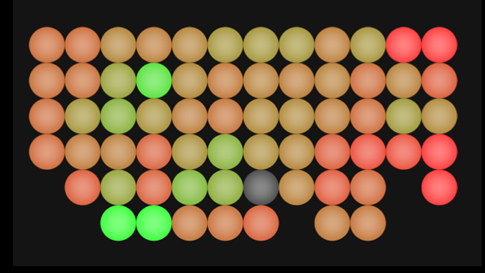
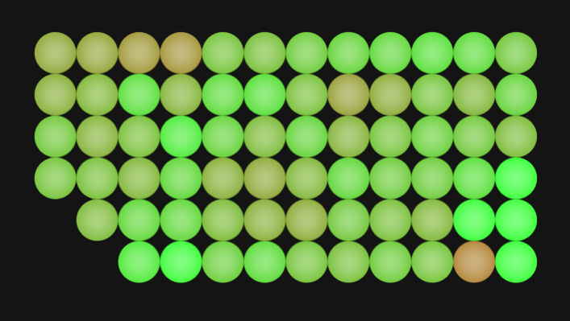
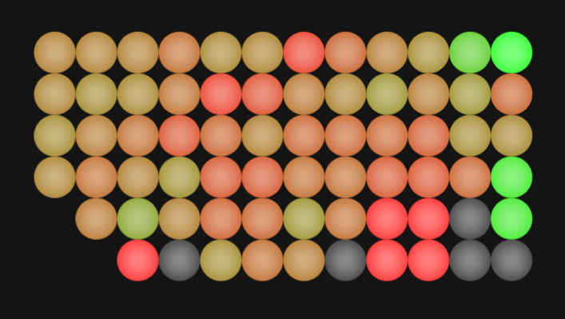
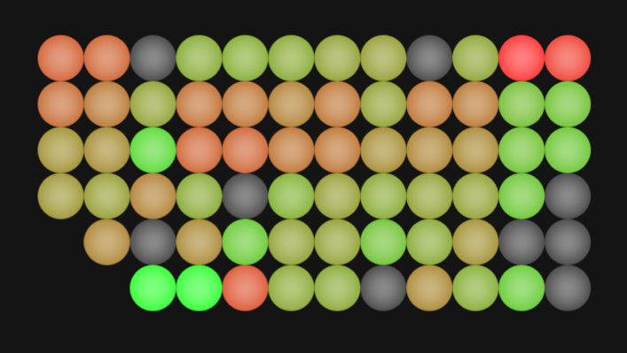

John Kestner / Stephanie Bian / Henry Holtzman // Information Ecology
These are visualizations of Twitter weather on a topic, mapped by location of tweets (U.S. only). This isn't live right now because it's very data-intensive at the moment. Green is positive mood, and red is negative mood. Each circle approximately represents a 400km-diameter area.
Scott Brown — January 20, 2010. Day after Scott Brown won the Massachusetts special Senate election.
Coakley — January 20, 2010. Day after Martha Coakley lost the Massachusetts special Senate election.
Avatar — January 20, 2010.
Obama — November 19, 2009.
Patriots — November 16, 2009. Day after the New England Patriots lose a close game against the rival Indianapolis Colts.